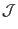

Next: Radial differential operator Up: Magnetic surface coordinates general Previous: Covariant form of magnetic
In solving the MHD eigenmode equations in toroidal geometries, besides the
 operator, we will also encounter another surface
operator
. Next, we derive
the form of the this operator in
operator, we will also encounter another surface
operator
. Next, we derive
the form of the this operator in
 coordinate system.
Using the covariant form of the equilibrium magnetic field [Eq. (268)], we obtain
coordinate system.
Using the covariant form of the equilibrium magnetic field [Eq. (268)], we obtain
Examining Eq. (272), we find that if the Jacobian
 is
chosen to be of the form
, where  is
some magnetic surface function, then the coefficients before the two partial
derivatives will be independent of
is
some magnetic surface function, then the coefficients before the two partial
derivatives will be independent of  and
and  . It is obvious that
the independence of the coefficients on
. It is obvious that
the independence of the coefficients on  and
and  will be
advantageous to some applications. The coordinate system
will be
advantageous to some applications. The coordinate system
 with the particular choice of
is
called the Boozer coordinates, named after A.H. Boozer, who first proposed
this choice of the Jacobian. The usefulness of the new toroidal angle
with the particular choice of
is
called the Boozer coordinates, named after A.H. Boozer, who first proposed
this choice of the Jacobian. The usefulness of the new toroidal angle  is highlighted in Boozer's choice of the Jacobian, which makes both
is highlighted in Boozer's choice of the Jacobian, which makes both
 and
be a constant-coefficient differential operator. For other choices of
the Jacobian, only the
and
be a constant-coefficient differential operator. For other choices of
the Jacobian, only the
 operator is a
constant-coefficient differential operator.
operator is a
constant-coefficient differential operator.
yj 2018-03-09